SHOPPING IN DUBAI
The best places to shop in Dubai, from traditional souks to gleaming malls
Shopping is a national pastime in the UAE, a place where high street and designer brands from around the world stand side-by-side in shiny, air-conditioned mega malls, while old-school souks still look much like the mock historic market on display in Dubai Museum. Elsewhere, emerging artisans are carving a niche off the beaten path. Telegraph Travel expert Sarah Hedley Hymers guides you through the retail temples you simply can’t miss and the ones worth making a detour for.
Downtown Dubai
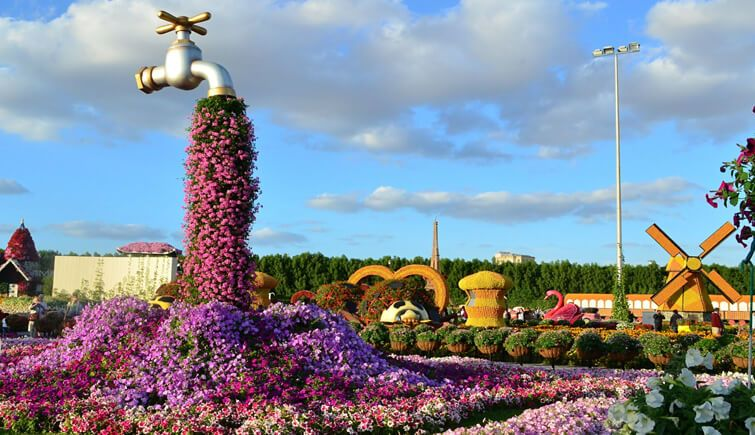The UAE’s highest concentration of designers boutiques can be found here, alongside the Dubai Aquarium and Underwater Zoo and an Olympic-sized ice rink, while the Dubai Fountain and Burj Khalifa are on the doorstep. Walking through the several million square feet of retail space is a workout: you can navigate with the Dubai Mall mobile app, and be sure to pack comfortable shoes – or buy a pair. With more than 1,300 shops, including anchor departments stores Galeries Lafayette and Bloomingdale’s, finding the right footwear for the job shouldn’t be a problem.
Al Barsha
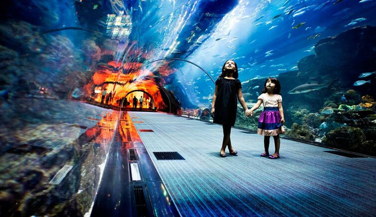The only place in the UAE where you'll find a ski slope, Mall of the Emirates is a magnet for Middle Eastern travellers who’ve never seen snow. The mall’s Fashion District looks like the pages of Vogue brought to life, with Bulgari, Dior and Gucci stopping shoppers in their tracks with attention-grabbing window displays. High-street offerings include Next, Topshop and the popular Turkish equivalent, Koton, while Harvey Nichols and Debenhams go head to head as the flagship department stores. The 'Hands Free' service means shoppers can have their bags collected and delivered later anywhere in the mall, car parks or connecting hotels (a Kempinski and a Sheraton).
Jebel Ali
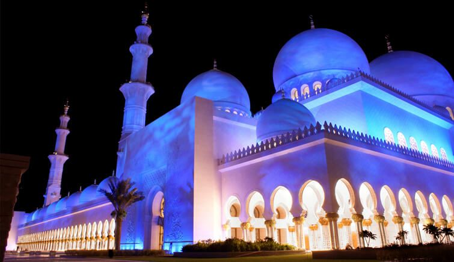This incongruous Tuscan village-styled mall on the outskirts of Dubai is to the UAE what Bicester Village is to England. From Armani to Ermenegildo Zegna, several discounted high-end collections can be found in bespoke boutiques or one of three multi-brand department stores: The Deal, Priceless and Galeries Lafayette L’Outlet. Hotfoot it to Coach, Dunhill, Michael Kors and Montblanc for luxury leather accessories, and bag high street bargains at stores including Banana Republic, Gap Factory, Diesel, Superdry and Ted Baker. In addition to the 100 or so shops, there’s a food court and Stay & Play, a care facility where children can be entertained while grown-ups splurge.
City Walk
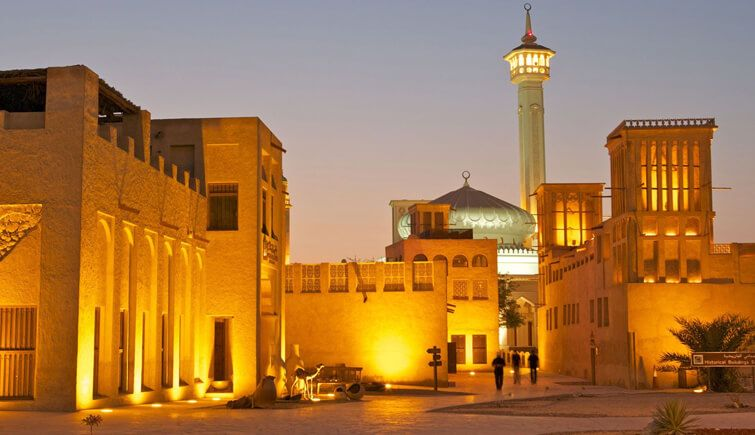This little shop of curiosities, an outpost of a family business based in Thailand, presents dramatic handcrafted jewellery and home décor inspired by Asian mythology and made from unusual materials, most striking among them the iridescent green wings of the scarab beetle. Outshining the sharpest cut of emerald, large and ornate scarab earrings and pendants emit an almost supernatural glow from within the shop's glass display cases. A bespoke scarab souvenir can cost a few thousand pounds, but it’s sure to remain a talking point for years to come. Slightly more affordable items are fashioned from seeds, nuts, shells and emu eggs.
Boxpark
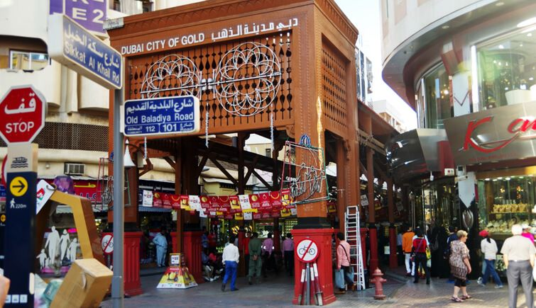Taking cues from East London, this container-park concept store narrates an interesting selection of youthful Middle East-inspired clothing, jewellery and homeware. Discover local pop-ups, attend sartorial workshops (announced on their Instagram page) and explore the ever-changing stock of offbeat fashions and Arabia-themed gifts. You may find dresses that look good with trainers, gold-plated hashtag necklaces, slogan caps, feather headdresses, insect motif slippers, coffee table fashion tomes and Hand of Fatima knuckle rings. The location, Boxpark, is a hub of quirkiness, with a programme of street performances and noteworthy neighbouring outlets, including eclectic stationary store Typo and Emirati sweet shop Sukkar.
Al Wasl Road (Al Manara)

On point Middle Eastern mementos can be found at this eclectic boutique showcasing the region’s designers. Twentieth century Egyptian movie star Umm Kulthum is among the local musical legends remembered on clothing, accessories and home décor. You don’t need to understand the Arabic calligraphy of her song lyrics to appreciate the retro-Arabian look of inscribed coasters, cushion covers and clutches. Labels to look out for include Elsa O, with jewellery inspired by Levantine symbology, and Sarah’s Bag, a fashion enterprise that employs underprivileged women in Lebanon to create quirky luxury accessories.
Alserkal Avenue
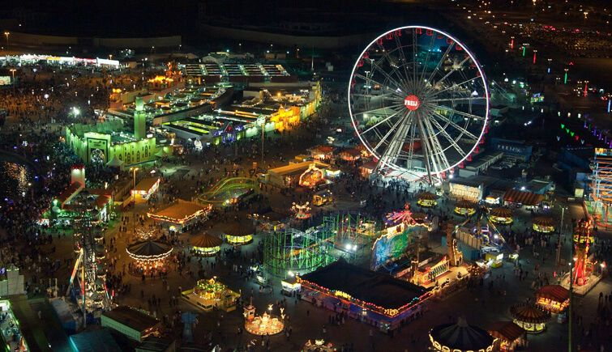A seductive chocolate aroma welcomes visitors into this artisan factory and café; a table of complimentary samples gets them hooked. Available in single bars, gift boxes and hampers, the Emirati collection is a befitting present for foodies back home. Flavours of the region resound in milk chocolate bars of Ragag, filled with pieces of thin and crispy Arabian ragag bread, and Khabeesa, spiked with dates, cinnamon and cardamom. Located in an avant garde art hub known for its hip and heterogeneous boutiques and galleries, there’s plenty more to purchase in this neighbourhood, especially when fuelled by a sugar rush.
Al Seef
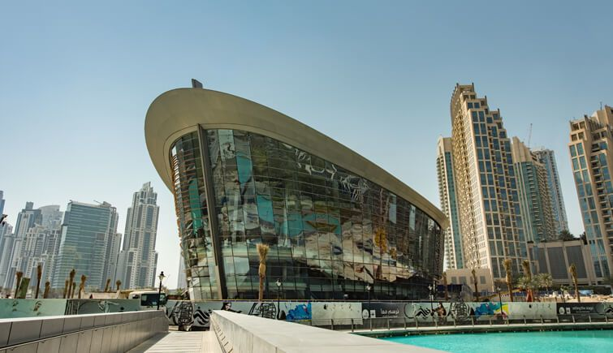A treasure trove of sugary sweets, exotic herbs and spices and local health and beauty remedies, Zafarana’s shelves bulge with squidgy Turkish Delight; buckets of dried lavender, hibiscus and rose petals; freshly ground coffee laced with cardamom; jars of honey packed with hazelnuts; sticky rolls of halva and baklava; fat dates bursting with dried fruits and pistachios; a hundred plant-based medicinal oils and tubs of slick African shea butter, promising shiny hair, clear complexions and improved digestions. This is a grotto for greedy travellers and the manager is an expert at explaining what’s on the menu.
Bur Dubai and Deira
Long before the UAE was born, a cluster of souks formed around the mouth of Dubai Creek, feeding on passing trade from ships. On the left bank stands Bur Dubai’s Textile Souk; abra boats sail passengers across the water to Deira’s Spice, Perfume and Gold Souks. It’s hard to know where one souk ends and another begins as each tends to proffer a similar jumble – saffron, incense, pashminas, fridge magnets, jewellery, lanterns and the odd 'genuine fake'. Get lost in the maze and haggle politely if something catches your eye. Wear noticeable headphones and turn up the volume if you prefer not to be disturbed.
Various locations
Inhale the thousand scents of Arabia at the UAE’s leading fragrance house. Despite its Westernised title, TP – as it’s known – is committed to authenticity. Launched in Dubai in 2013, it now has 16 stores across the Gulf. Its best-sellers are Rose Vanilla and Amber Oud eau de perfumes and Dkhoun TP, the brand’s signature incense tablets, which smoulder atop charcoal in brass burners outside stores located in City Walk, Al Seef, La Mer and JBR The Beach. If any smell can take travellers back to Dubai, then it’s probably this one.
FASHION IN DUBAI
Dress codes for travelers in the UAE
In June 2012, two Emirati women began a twitter campaign calling on foreign visitors to respect their culture and adhere to an existing dress code. Hannan Al Rayyes and Asma Al Muheiri launched their UAE Dress Code page on Twitter because they were “tired of seeing tourists in beachwear or revealing outfits in shopping malls”.
Too many girls in the malls were “wearing shorts so short they looked like hot pants,” Ms Al Rayyes said. Their first followers tweeted last week about their “disgust” at seeing foreigners dressed inappropriately. “We don't want people to start wearing the abaya or anything. We're just asking them to cover up parts of the body that are sensitive to our culture,” she said.
There are already laws setting out the dress code, and signs at the entrances to malls – but Emiratis believe those laws are not being enforced. According to the UAE's The National, Lt Col Mohammed Rashid Al Muhairi, from Dubai Police's Tourist Security Department (TSD), said it was important that the millions of visitors who come to the UAE each year understand local laws and culture. “We have to take into consideration that there are a lot of nationalities coming here, which means we have to be flexible.” He said it was police policy to only approach those whose outfits “border on nudity”. Emirati politicians are now considering a new law to enforce the dress code for foreigners. Meanwhile on Twitter, UAE Dress Code now has over 2000 followers. Many of them saying foreign visitors need to “respect our culture”. A few have linked the campaign to the so-called “burqua ban” policies in European nations such as France and Belgium, citing those laws and visitors' disrespect for dress standards as anti-Islamic. However, the overwhelming sentiment on the Twitter page is that there needs to be more education about Emirati culture and standards for visitors.
So what's acceptable dress in Dubai?
For women it means covering the shoulders and the knees (and everything in between). Spaghetti straps will raise eyebrows. You don‘t have to hide your figure, as you do in Iran or Saudi Arabia, but tight-fitting clothing is a no-no.
There's no law requiring you to cover your hair with a scarf (unless you're entering a mosque). Men should be wary of shorts – knee-length is considered modestly acceptable. T-shirts with strappy shoulders or very low V-necks will get you some attention you don‘t need (there goes your wardrobe of Bintang singlets from Bali!). Men shouldn't wear women's clothing (visibly) – that's sure to get you arrested. Both genders should keep sports clothes on the sports field, including cycling shorts (name me a culture where cycling shorts are NOT considered offensive!). At the beach, women can wear bikinis that cover all the important bits.
Thongs, Brazillian-style itsy-bitsy bikinis, and going topless are not ok. Thongs are definitely out for men at the beach, and sadly racing-style costumes (Speedos) are allowed - even on men over 50 - but board shorts and swimming shorts are more acceptable. Young children can wear almost whatever you want them to, but don't let them run around nude. Don't wear clothing with potentially offensive slogans or symbols. Think carefully and conservatively about this one. Leave the “I heart Tel Aviv” t-shirt in the suitcase. This is a different matter in Sharjah and Ajman, both members of the UAE, where Sharia law is dominant. They are very conservative societies and have strict, mandated dress codes. Women should cover upper arms and shoulders down to mid calf. No shorts at all for men.
The Bikini Incident
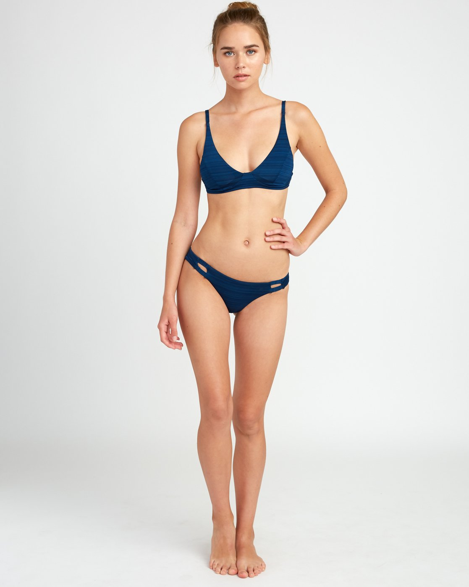In 2010, a British woman was arrested after she argued with an Arabic woman who'd accosted her about her bare shoulders. The British woman‘s response was to strip down to her bikini, right there in the shopping mall. She spent 3 days as a “guest” of Dubai police before she got a dressing-down (pun intended) from a judge and the charges were dropped (also pun intended). Again, in Sharjah and Ajman breaking the code will be dealt with more seriously.
What if my dress offends in Dubai?
A Janet Jackson-style wardrobe malfunction will see you explaining yourself to police.
If what you've chosen to wear doesn't quite meet the dress code, expect to have an Emirati woman come up to you and tell you so. Don't argue with her; apologize and either cover up straight away or promise to go and cover up as soon as possible. If you argue, the police will come. You may not be arrested for arguing (except if you swear), but you could be charged with “offending public decency”, and the word of the Emirati woman will trump you every time
TOURIST ATTRACTIONS DUBAI
Dubai Miracle Garden: World’s Largest Flower Garden
I bet, even the regular visitors cannot hide the tingling sensation in their feet while visiting the Miracle Garden in Dubailand which is one of most visited tourist attractions. And my only suggestion for you is to stop for a moment, take a deep breath and explode with excitement because why wouldn’t you! After all, this is the world’s largest flower garden that offers a visual treat to your eye with around 109 million flowers to witness, where you may take the whole day to admire and perhaps sniff the bubbly scent of the garden. Lets just say, Miracle Garden is without a doubt one of the most popular places to visit and is widely visited by nature lovers.
Bastakiya: The Old and Traditional Town of Dubai
Discover the other side of Dubai by visiting Bastakiya which is also known as Al Fahidi Historic District or Al Bastakia. It is located alongside Al Fahidi Fort and Dubai Creek and is an ideal spot to take a heritage walk tour sightseeing the neighbourhood of Dubai. Here, the place offers an interesting insight into the Arabian culture. It is here you can explore the architectural wonder of the old houses, brown wooden doors, wind towers and white mosque making it is a worthy place to visit. This historical place, Bastakiya may even offer a tizzy feeling to the culture lovers and a soothing balm to the city’s otherwise modern silhouette. The old town of Dubai is open on Sunday, Tuesday and Thursday from 10:30 to 12:00 and 9:00 to 10:30 on Saturdays.
Deira Souk: The Largest Gold Market in the World
The city of Dubai has a lot of souks (markets) but Deira is one ideal destination that every tourists enjoy visiting. Conveniently located close to Dubai Creek, it is said to have been established during 1830s, in fact, when you come here, you can still witness the old architecture style and the wooden archways in the market. But wait, let me tell you the best part and the only purpose of your entire trip here is probably to witness a variety of gold displayed on the shop windows and even better buying them with a constant though, you’d only wish you own them all! Besides the gold, the tourists and locals also come and take home varieties of other spices like cumin, saffron, frankincense, rose water and incense from the separate market situated adjacent to the Gold Souk.
Dubai Aquarium: The Biggest Underwater Aquatic Zoo
If you have seen enough of Dubai attractions, which I doubt will ever happen, you can head to one of the shopping centres, Dubai Mall and awe at the different marine species in the aquarium situated inside it. This tourist attraction is featured to be the largest aquarium in the world and it has approximately 140 variety of aquatic species. You can witness a few as you toddle the 48-meter long walk-through tunnel. However, to have even better experience, why not be a little adventurous and opt for a cage snorkeling and shark diving activities, it would create a life-long memorable experience. Other activities that may suit leisure travellers or elders is taking a glass bottom boat tours.
Global Village: An All Night Extravaganza with Entertainment, Food and Shopping
One of Dubai’s most popular tourist destinations, Global Village is the best place to be with friends and family. As the night falls, the entire village lights up in colourful and decorative bulbs offering an exciting ambience. With a variety of different pavilions each offering a cultural attraction of varied countries, this place is certainly a must visit. Visit the Egypt pavilion to buy some antiquities and (Jalabiyia) their traditional dresses; Oman to buy Omani fashion accessories, China for their colourful floral clothes and Africa pavilion for hand-carved artifacts. You can also get exquisite carpets from Iran and ethnic clothing from India and Pakistan’s pavilions. I bet, an evening spent here will lift your spirits high as you attend stage shows; get entertained; and end a perfect evening by savouring different country’s cuisine.
Dubai Desert Conservation Reserve: Home to the Arabian Gazelle
A bit of a city break is much needed even if you came solely for a city tour because there are a couple of nature tourist sites you just have to go explore in Dubai. One such fabulous place, a popular wildlife destination where you can find indigenous species of animals is Dubai Desert Conservation Reserve. Species like sand gazelles, mountain gazelles and Arabian oryx are introduced to tourists in this reserve. Covering a land of 225-sq-km, here you can get access to one of the four zones, via travel guides or tour operators, i.e. if you plan a quick day tour. However, if you decide to stay in their luxurious wildlife resort, the remaining three are accessible to the resort guests.
Alserkal Art District: A Gathering Place for Artists and Art Lovers
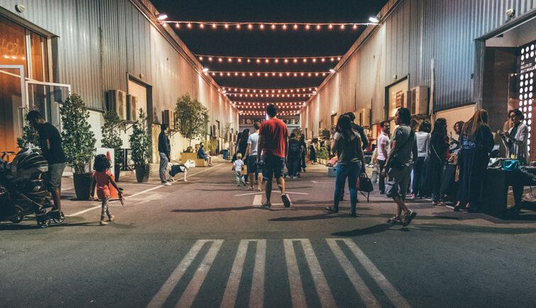One of the best places to visit in Dubai for art connoisseurs and lovers, Alserkal Art District is becoming a popular hub. Plan a visit here and visit a number of contemporary art galleries, while some are smaller start-ups, there are a few well established galleries like the Ayyam Gallery, Green Art Gallery and The Third Line. This district plays like a platform for new talents and helps in highlighting beautiful art works. In fact, Alserkal Art District also has a mishmash of restaurants and fashion boutiques opened by local designers. For certain, you can feel a livelier vibe, completely different from the other tourist spots, more artsy with a feel-good ambience.
Dubai Opera: A Cultural and Light-Hearted Entertainment Venue
When we speak of entertainment, the city of Dubai is not short of it but one popular tourist attraction that can’t be missed is the Dubai Opera located in downtown Dubai. For a night activity in Dubai, this is one of the places worth visiting for music entertainment where you can find muse in their opera shows, ballet, comedy nights, concerts and even classical instrument plays. Dubai Opera is one of a kind, an astonishing architectural beauty that can seat up to 2000 cultural aficionados. Come anytime of the year, and find various plays performed in the different musical theater here. There is also a rooftop eatery serving lip-smacking multiple cuisines.
Bur Dubai Grand Mosque: Architectural Marvel of Dubai
You may find a blend of nationalities in Dubai with a mix of pilgrimage places to visit but one most popular shrine in Dubai is none other than the Grand Mosque. This architectural marvel comes under the eight biggest mosque in the world and the biggest in UAE, it was here the first ever function of the memorial service of Sheikh Zayed, the former president of UAE was held. It is unlikely that the visitors would not adore this place, even from afar, this prestigious treasure of Dubai glows in bright royal blue light at night. And it is probably one of the most photographed tourist attractions in the world. The corridors of the mosque are surrounded by the biggest lights in the world with 24 carat gold glazed on the pillars designed like a leaf facing earthward.
TRANSPORTATION IN DUBAI
Dubai Bus
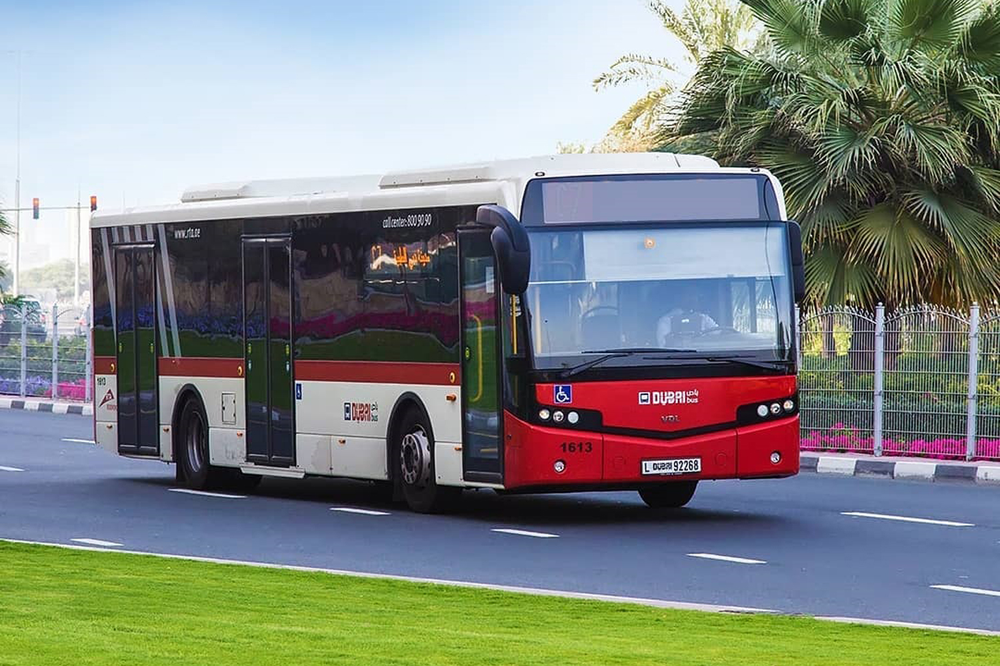The bus network in Dubai is run by the Roads and Transport Authority. These buses connect all the major landmarks and tourist spots of the city, and are very comfortable. With the fare starting at Dh 2, these buses run every 15-20 minutes, except on Fridays, when the frequency is a bit low. You can also take the economical Big Bus sightseeing tour which takes you to all the major attractions and offers live commentary and free admission to the Dubai Museum and a dhow cruise.
Dubai Metro
This is one of the most commonly used and efficient modes of public transport in Dubai. It holds the record of being the world’s longest fully automated metro rail network, with two lines (Red and Green) operational.
Dubai Taxi
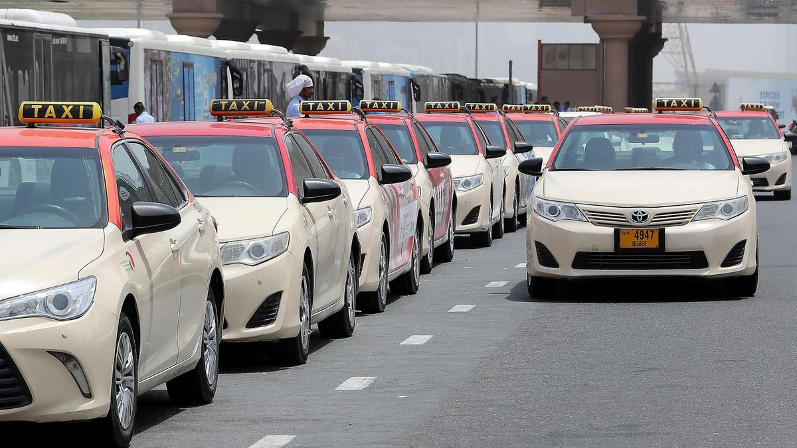Taxis are a convenient way of getting around Dubai. Easily available throughout the city, you will always find a long line waiting outside shopping malls and other attractions. Starting with a minimum of Dh 3, the fare increases at a rate of Dh 1.60 per kilometre.
Dubai Waterbus
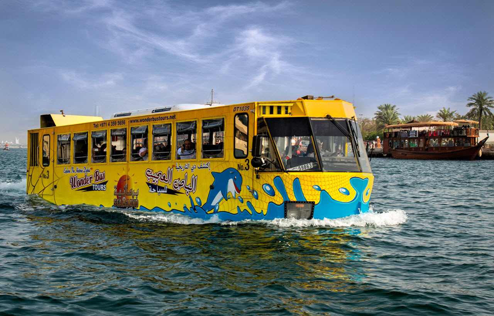This is an economical and preferred way to travel from Bur Dubai to Deira and vice versa. Fares for the water buses range from Dh 1 – Dh 4, depending on the route you take.
Driving in Dubai

Vehicles are driven on the right side of the road and you need to have a credit card and a domestic and international driver’s license if you wish to hire a car in Dubai. However, this is not recommended due to the several traffic congestions which are expected throughout the day.
ACCOMMODATION IN DUBAI
Welcome to Dubai, an epicenter for a lifestyle of luxury. From the world’s first 7 star hotel to the tallest mega skyscraper, this city has become a playground for the affluent and those with elaborate tastes. Each of these cool Dubai hotels have something different to offer their guests.
Spend your days strolling through lavish gardens, admiring historical architecture. Or take the adventurous route by jumping out of an airplane and renting water jetpacks. Experience cuisines from Michelin rated chefs, followed by a night out in VIP at the Armani/Prive. Ready to book your trip? Check out our list of cool Dubai hotels to help decide where you’ll stay.
W Dubai – The Palm
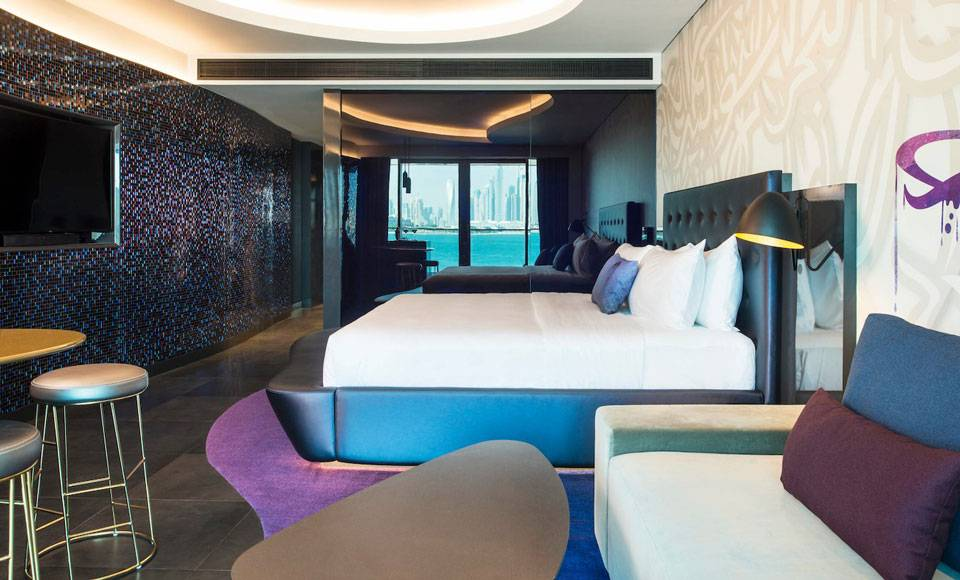From sunup to sundown, there’s no chance to get bored at W Dubai – The Palm. The buzzy new hotel brings the best of art, music, design, fashion and food to the Palm Jumeirah, along with the high standard of hospitality you’d expect from this globally acclaimed brand. Daytime hours tempt guests with bean bags on the beach, water sports for adrenaline junkies, and R&R at AWAY Spa. Watch sunset from the SoBe rooftop, then fuel up at one of two celebrity chef restaurants and hit the WET Deck for signature cocktails and DJ beats.
Stella di Mare Dubai Marina
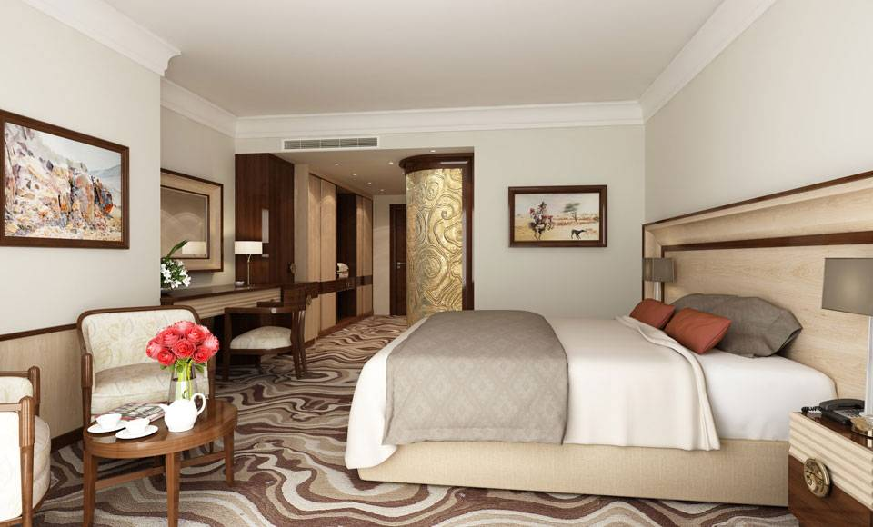A recent addition to Dubai as of 2018, Stella di Mare Dubai Marina is the first international location for the Egypt-based hotel brand. The five-star property includes 369 rooms decorated in Art Deco style, three restaurants, a gym, and a 550 sq m spa complete with steam rooms, indoor Jacuzzis and an outdoor swimming pool. The hotel’s three bars – a lobby lounge with snacks and Italian coffee, a pool bar, and a rooftop watering hole serving cocktails and Marina views – are set to be highlights.
Magic Camps Dubai
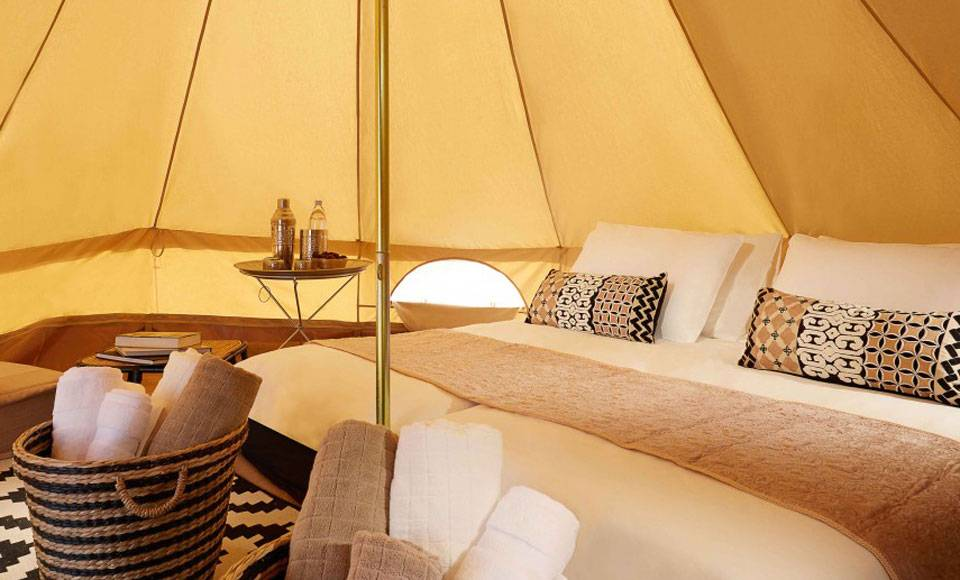There’s much to live up to when ‘magic’ is in your name. Magic Camps Dubai delivers a spellbinding stay in an otherworldly dunescape and personalized service that borders on wizardry – so yes, we’d say they nailed it. After a Jeep safari through the desert, you’ll arrive at a private tent village far from the madding crowds of Dubai. How you spend the rest of the experience is up to you. Sandboard, ride camels, stargaze, conquer the scorched terrain on a quad bike, or take in a private birds of prey display.
Melia Desert Palm
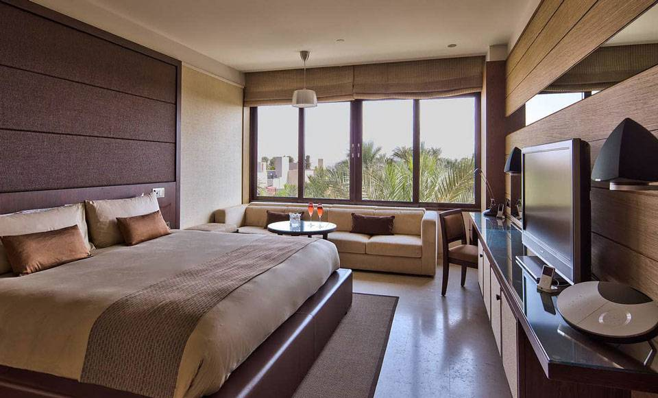Melia Desert Palm Dubai is an Arabian oasis located on a 160-acre polo estate. The standard fare of spacious accommodations, bars, restaurants, a spa and fitness facilities are all at guests’ disposal here, but it’s the equestrian flair that sets Melia Desert Palm Dubai apart. The property includes four polo fields, a riding school, stables for up to 300 horses and plenty of equine-inspired decor. If four legs aren’t your thing, keep your own two fighting-fit on the jogging and cycling tracks that snake throughout the grounds. In the event you have to outrun an errant camel, you’ll be ready.
Rove Downtown
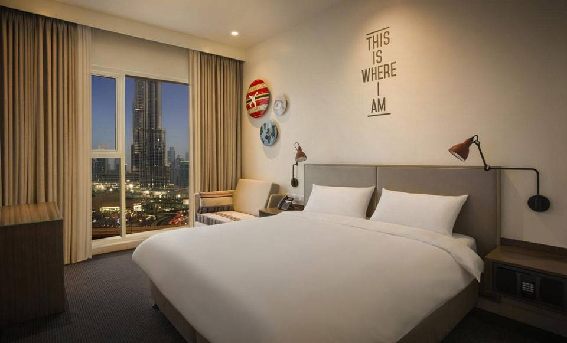Dubai is famous for extravagance and excess, but rarely do we associate the city with funky eccentricity. Rove Downtown is out to change that. From the Instagram-friendly art collection to the on-site Starbucks to the affordable price point, Rove Downtown caters to a tech-savvy (and budget-conscious) Millennial crowd who find Dubai’s glamorous stays too stuffy for their tastes. But that classic Dubai opulence is never far away – the Dubai Mall is within strolling distance and many rooms boast a Burj Khalifa view.
One & Only The Palm
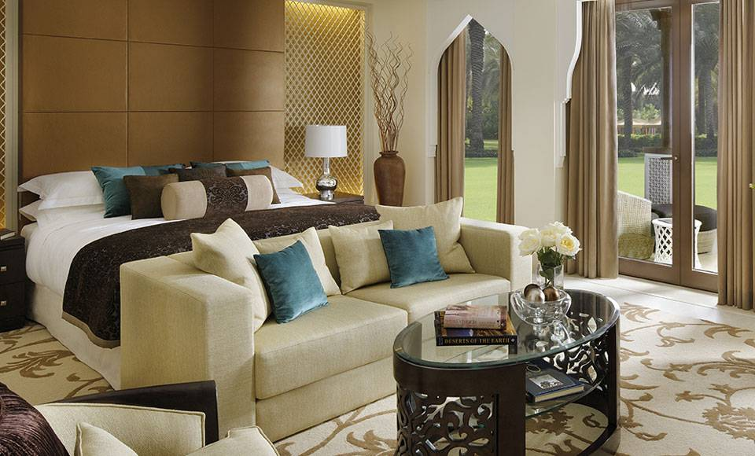Join us in peaceful elegance at One & Only The Palm’s beachfront oasis. Located on the iconic Palm Jumeirah peninsula, this cool hotel in Dubai exceeds guest’s expectations with their flawless style and comfort. Choose between the Manor House, Palm Beach Mansions or Beachfront Villas for your stay, only steps away from sand beneath your feet. Join Three-star Michelin Chef Yannick Alleno for dinner at Stay and experience the taste of French cuisine right in Dubai. After dinner, catch drinks at the trendy 101 Bar, overlooking Dubai’s decadent skyline and private marinas. As far as cool Dubai hotels go, the One & Only The Palm tickles the fancy of those with only the most decadent tastes.
Anantara The Palm Dubai Resort
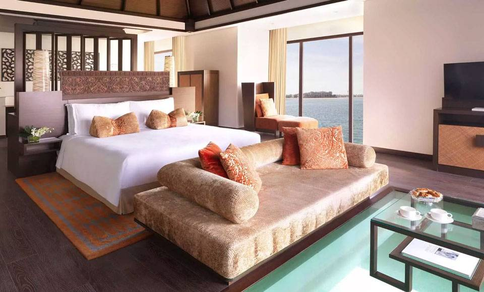Nestled on the eastern crescent of the peninsula lies Anantara The Palm Dubai Resort. Inspired by Thai architecture, the Anantara brings a taste of Asia through their design and cuisine. Explore the flavors of the Mekong with dishes from Vietnam and China with cooking classes at hand. Explore the resort by Thai river boats or operated tuk-tuks. When you’re done, send the kids to the teen clubs and relax in the traditional Turkish hammam at the Anantara Spa. An unforgettable experience in revitalising your spirit with ancient rituals in promoting serenity. What makes this one of our featured cool hotels in Dubai? The Over Water Villas, exclusive to the Anantara and can not be found anywhere else on the Palm.
Palazzo Versace Dubai
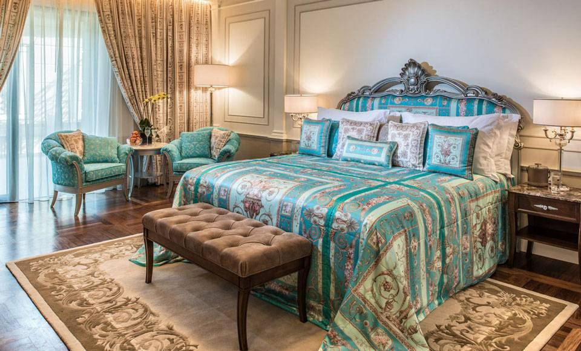Prepare for a neoclassical time warp as you approach the Palazzo Versace, located in the heart of Culture Village. Inspired by a 16th century Italian Palace, this luxury hotel is held in high regards from visitors around the world. Known for their elaborate Italian furnishings, the hotel brings a classic, homey feel to the ultra-luxe landscape of this epic city. Live the Versace lifestyle, meandering through lavish gardens decorated by lagoons and reflection ponds. Explore the shores of the historic Dubai Creek. At night, head to Q’s Bar and Lounge for live music, exclusive drinks and the world’s finest cigars.
Armani Hotel Dubai
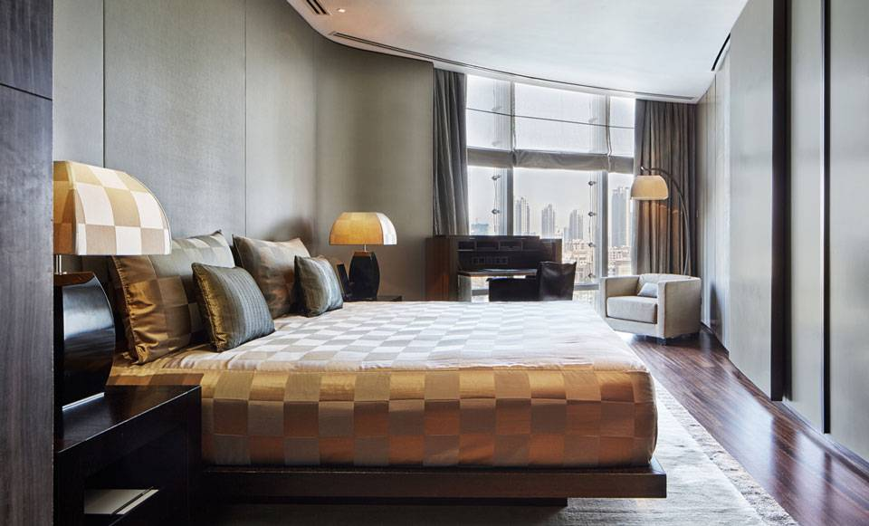The Armani Hotel takes cool hotels in Dubai to a whole new level, literally. Located in the Burj Khalifa, the Armani Hotel is apart of the highest megatall skyscraper in the world. Yes, at 829.8m (2.722ft) this building breaks 17 world records related to buildings highest amenities. Take in an extensive view of Dubai on the worlds highest outdoor observation deck at 452m (1.483ft) above sea level. Party at the ultra-chic Armani/Prive night club located on the 144th floor, where the best parties in the city take place. Sleep in authentic Italian luxury, for every room in this boutique hotel features the personal touch of designer Giorgio Armani himself.
Vida Downtown
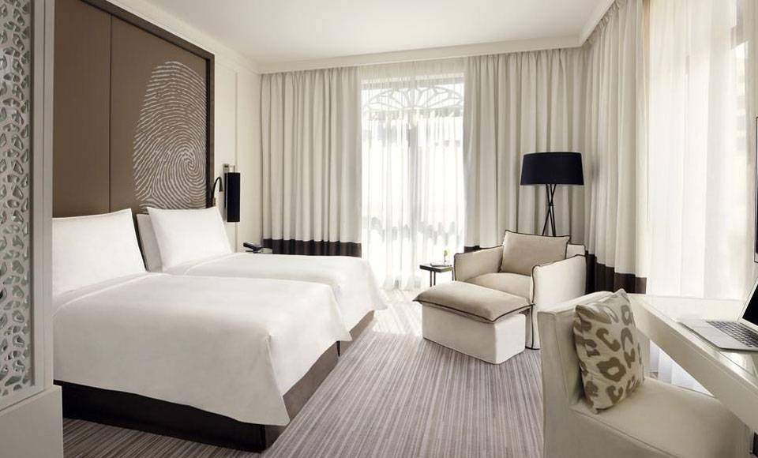For taste of urban Dubai, Vida Downtown can fulfil your refined palette. Choose between one of their chic accommodations, ranging from deluxe rooms to the Boulevard Suite. A neutral coloured modern styled 2 bedroom space with walk through closets. Cool down in their luxe pool/relaxing deck, where the sun shining and the drinks are flowing. What attracts guests to this cool hotel in Dubai is it’s location to the cities attractions. Located in Old Town, Vida is close to the Dubai Mall, the Burj Khalifa, the Ice Rink and children’s entertainment venues. For a cultural experience, head over to Qamardeen Souk from the hotel for a traditional Arabian souk.